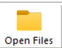
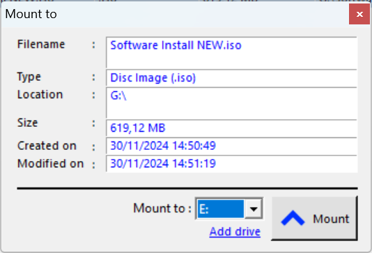

1.0.主对话框
主窗口显示磁盘镜像文件列表。该列表包括文件名、类型、文件大小、文件来源等信息。您可以通过点击列标题来按任意列对列表进行排序。

控制按钮（打开文件、挂载、弹出、移除、清空所有、设置、关于）位于列表上方。根据当前磁盘镜像文件可以执行的操作，这些按钮可能会打开或关闭。
|
支持 uDiscMounter 是一款设计用于管理虚拟驱动器并挂载磁盘镜像文件的工具，支持Windows操作系统。它支持几乎所有已知的CD/DVD镜像文件格式，如.ISO、.BIN、.IMG、.CIF、.NRG、.MDS、.CCD、.BWI、.ISZ、.DMG、.DAA、.UIF、.HFS等。通过uDiscMounter，用户可以轻松地挂载和管理各种磁盘镜像文件，而无需物理硬件，从而更快速高效地访问这些镜像文件中的内容。
1.0.主对话框 主窗口显示磁盘镜像文件列表。该列表包括文件名、类型、文件大小、文件来源等信息。您可以通过点击列标题来按任意列对列表进行排序。
控制按钮（打开文件、挂载、弹出、移除、清空所有、设置、关于）位于列表上方。根据当前磁盘镜像文件可以执行的操作，这些按钮可能会打开或关闭。 2.0 文件操作 有几种方法可以将文件打开到uDiscMounter中，最常见的方法是直接使用打开文件控制按钮，它位于磁盘镜像文件列表上方。  拖放：在文件资源管理器中选择要打开的文件，然后将其拖放到uDiscMounter中。 关联文件：这是将磁盘镜像文件打开到uDiscMounter中的最快方式，您只需双击您要打开的磁盘镜像文件。 如何将磁盘镜像文件与uDiscMounter关联：
3.0 挂载与弹出 使用uDiscMounter挂载磁盘镜像文件非常简单，您只需要按照文件操作中的说明打开磁盘镜像文件。如果磁盘镜像文件已经打开，您只需点击要挂载的磁盘镜像文件，然后点击挂载按钮，随后会弹出一个信息对话框，显示磁盘镜像文件的信息以及挂载的虚拟驱动器目标。  要卸载磁盘镜像文件，您可以通过Windows资源管理器右键点击已经挂载的虚拟驱动器，并选择弹出。或者，您也可以通过uDiscMounter程序点击弹出按钮，然后选择先前挂载的虚拟驱动器。 4.0 虚拟驱动器 添加虚拟驱动器数量：进入设置菜单，然后选中虚拟驱动器数量部分，指定所需的数量并点击设置按钮以应用更改，记得重启电脑以使更改生效。 移除虚拟驱动器：要移除虚拟驱动器，只需打开设置菜单，选择移除驱动器。 重新安装虚拟驱动器：在设置菜单中点击安装驱动程序。
© 2015 - 2025 Ari Sohandri Putra. 保留所有权利。 |
|
||||||||||||||||||||||||||||||||||||||||||||||||||||||||||||||